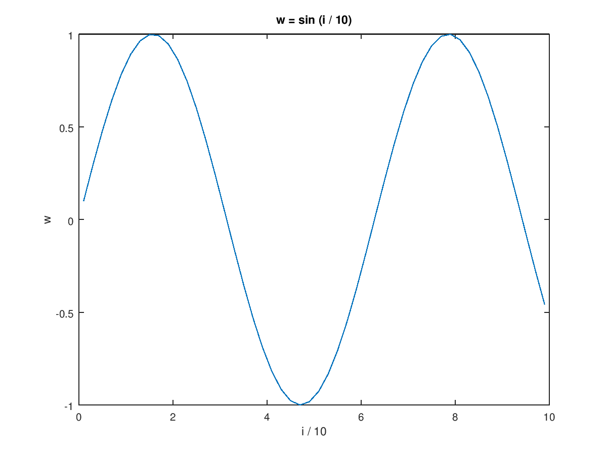

First, follow the
installation guide
to install GNU Octave on your system. Then, launch the interactive prompt by
typing octave in a terminal or by clicking the icon in the programs menu.
For further guidance, see the manual page on
Running Octave.
Assign values to variables with = (Note: assignment is pass-by-value).
Read more
about variables.
a = 1;
# or % start a comment line, that continues to the end of the line.
Read more
about comments.
The output of every command is printed to the console unless terminated with
a semicolon ;. The disp command can be used to print output
anywhere. Use exit or quit to quit the console.
Read more
about command evaluation.
t = 99 + 1 # prints 't = 100'
t = 100
t = 99 + 1; # nothing is printed
disp(t);100
Many mathematical operators are available in addition to the standard arithmetic. Operations are floating-point. Read more about elementary math.
x = 3/4 * pi; y = sin (x)
y = 0.70711
Arrays in Octave are called matrices. One-dimensional matrices are referred
to as vectors. Use a space or a comma , to separate elements in a row and
semicolon ; to start a new row. Read more
about matrices.
rowVec = [8 6 4]
rowVec = 8 6 4
columnVec = [8; 6; 4]
columnVec = 8 6 4
mat = [8 6 4; 2 0 -2]
mat = 8 6 4 2 0 -2
size(mat)
ans = 2 3
length(rowVec)
ans = 3
Many common linear algebra operations are simple to program using Octave’s matrix syntax. Read more about linear algebra.
columnVec * rowVec
ans = 64 48 32 48 36 24 32 24 16
rowVec * columnVec
ans = 116
columnVec'ans = 8 6 4
Octave is 1-indexed. Matrix elements are accessed as
matrix(rowNum, columnNum). Read more
about accessing elements.
mat(2,3)
ans = -2
Octave supports for and while loops, as well as other control flow
structures. Read more
about control flow.
x = zeros (50,1); for i = 1:2:100 # iterate from 1 to 100 with step size 2 x(i) = i^2; endfor y = zeros (50,1); k = 1; step = 2; while (k <= (100-step)) y(i) = k^2; k = k + step; endwhile
For-loops can often be replaced or simplified using vector syntax. The
operators *, /, and ^ all support element-wise operations writing
a dot . before the operators. Many other functions operate element-wise
by default (sin, +, -, etc.). Read more
about vectorization.
i = 1:2:100; # create an array with 50-elements x = i.^2; # each element is squared y = x + 9; # add 9 to each element z = y./i; # divide each element in y by the corresponding value in i w = sin (i / 10); # take the sine of each element divided by 10
The function plot can be called with vector arguments to create 2D line and scatter plots. Read more about plotting.
plot (i / 10, w); title ('w = sin (i / 10)'); xlabel ('i / 10'); ylabel ('w');
Strings are simply arrays of characters. Strings can be composed using C-style formatting with sprintf or fprintf. Read more about strings.
firstString = "hello world"; secondString = "!"; [firstString, secondString] # concatenate both strings
ans = hello world!
fprintf ("%s %.10f \n", "The number is:", 10)
The number is: 10.0000000000
Conditional statements can be used to create branching logic in your code. Read more in the manual.
# Print 'Foo' if divisible by 7, # 'Fizz' if divisible by 3, # 'Buzz' if divisible by 5, # 'FizzBuzz' if divisible by 3 and 5 for i = 1:1:20 outputString = ""; if (rem (i, 3) == 0) # rem is the remainder function outputString = [outputString, "Fizz"]; endif if (rem (i, 5) == 0) outputString = [outputString, "Buzz"]; elseif (rem(i,7) == 0) outputString = "Foo"; else outputString = outputString; endif fprintf("i=%g: %s \n", i, outputString); endfor
i=1: i=2: i=3: Fizz i=4: i=5: Buzz i=6: Fizz i=7: Foo i=8: i=9: Fizz i=10: Buzz i=11: i=12: Fizz i=13: i=14: Foo i=15: FizzBuzz i=16: i=17: i=18: Fizz i=19: i=20: Buzz
The help and doc commands can be invoked at the Octave prompt to print documentation for any function.
help plot doc plot
Community-developed packages can be added from the Octave Forge website to extend the functionality of Octave’s core library. (Matlab users: Forge packages act similarly to Matlab’s toolboxes.) The pkg command is used to manage these packages. For example, to use the image processing library from the Forge, use:
pkg install -forge image # install package pkg load image # load new functions into workspace